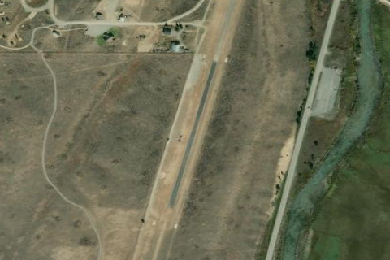

STANLEY
2U7 · ID

Aerial imagery source: Esri, Vantor, Earthstar Geographics, and the GIS User Community
| Identifier | 2U7 |
|---|---|
| State | ID |
| Runway length | 4,300 ft |
| Runway width | 150 ft |
| Surface | ASPH-DIRT |
| Runway | 17/35 |
| Elevation | 6,403 ft |
| Ownership | public |
| CTAF | 122.9 |
| Coordinates | 44.20855555, -114.93452777 |
Notes
[idaho_itd] State Airfield [shortfield] Location Overview Stanley Airport sits just southeast of the small town of Stanley, Idaho, in a valley surrounded by high mountainous terrain at the edge of the Sawtooth Range. The airport runs along the Salmon River and is a state-managed general aviation airport used primarily by recreational aircraft and air taxi operators traveling to and from the backcountry, along with the U.S. Forest Service and the Idaho Department of Fish and Game. Sitting at roughly 6,400 feet elevation, it serves as one of the more popular jumping-off points into Idaho's vast network of backcountry strips. SkyVector + 4 Camping & Recreation The field offers courtesy bicycles for visitors to travel into town and an area for picnicking and camping. Pilots camping overnight are recommended to use the mid-field tie-downs, which keep them out of the way of commercial operators, have some grass, and are quieter. Many visitors fly in simply to enjoy the scenic Sawtooth area for a meal in town, and the strip also supports broader recreation access into the surrounding wilderness, rivers, and trails near Stanley. Notes & Warnings There is no fuel available at Stanley Airport, and the field receives no winter maintenance. Standard operations call for pilots to normally land on Runway 35 and depart on Runway 17. The strip sees numerous air taxi operations during the summer months, so traffic can be busy in peak season, and formation arrivals and departures are highly discouraged. Dust is a major issue, so pilots are asked to minimize power used until on the takeoff roll, and everyone is encouraged to be considerate of other users, fly quiet, and minimize practice landings and takeoffs. Idaho's aeronautics division stresses that mountain flying in the state is a serious, challenging endeavor requiring rock-solid slow-flight and airspeed-control skills, intimate knowledge of aircraft performance, and well-defined personal limitations — the published procedures are not a substitute for proper mountain flying training. There are also no published instrument procedures at 2U7, meaning it's strictly a visual-approach field. History Stanley Airport has served the community since it was activated on February 1, 1954, and remains a publicly owned airport open to the public on about 25 acres of land. Over the decades it has grown into a key piece of local infrastructure, supporting not just recreational and air-taxi traffic but also search & rescue operations in the backcountry and aerial/wildland firefighting, reflecting Stanley's remote position deep in central Idaho's mountains. In recent years the state has continued to invest in the field, including paving improvements — the Idaho Division of Aeronautics completed paving of the first 1,600 feet of the runway's north end and a run-up area, with further paving work and related closures planned for the airport in 2025. Today it stands as one of the best-known and most-used strips in Idaho's celebrated backcountry airstrip system.